Introduction
The second assignment focuses on parametric design and computer-aided cutting. The project is divided into two parts:
- Part 1: Vinyl cutting (individual)
Design and cut a sticker using a Roland vinyl cutter. The maximum cutting area is 100 × 50 cm (one vinyl sheet). - Part 2: Laser cutting: parametric press-fit model (individual)
Design a parametric press-fit model in Autodesk Fusion 360 (or another CAD program). The model must be scalable through parameters such as material thickness, height, and width, and include at least three joints. The parts are then cut on a laser cutter and assembled. - Available laser-cutting materials: 3 mm and 5 mm acrylic sheets (500 × 500 mm). Additional materials may include cardboard, 6 mm birch plywood, 2 mm acrylic, and other offcuts depending on availability.
- Group work (Part 2): In teams of up to three students, we choose a laser cutter and determine its kerf through test cuts.
The results are documented on this website page, and design files are added to a databank: Thangs
Vynil cutting
Planning and preperation
I watched a youtube video on how a vinyl cutter works Intro to vynil cutting. They use a Roland cutter, the same model as the one we use in the Fab Lab. The video explains the difference between heat-transfer vinyl and sticker vinyl, and for this project we are using a sticker vinyl sheet. I have used a vinyl cutter before, having made a sticker in primary school. I also watched a video tutorial on Making a sticker in Inkscape . After thinking about a design, I decided to create a text sticker with my initials (MTY) and include the logo of my boyhood football club, Breiðablik. I found a PNG version of the logo online and imported it into Inkscape, placing it on a blank document alongside the text. Finally, I opened Document Properties in the Inkscape SVG file and set the page size to 1000 x 500 mm to match the maximum cutting area.
To remove the PNG background from the Breiðablik logo, I used Trace Bitmap in Inkscape. I selected Single scan, chose Brightness cutoff as the detection mode, and set the threshold to 0.5. This converted the logo into a scalable vector (so it can be resized without losing quality).
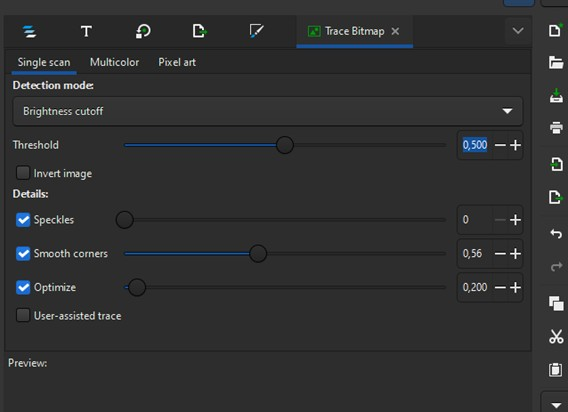
Next, I opened Fill and Stroke and adjusted the stroke style so the outline thickness was set to 0.02 mm.
Cutting the stickers
Once the design was finished, I went to the FabLab in the VR-III building to cut the stickers using a Roland vinyl cutter. For this part of the process, I received help from the teaching assistant, Magnús. I decided to make two versions of the MTY text: one in a normal bold italic style and another in a Varsity Shadow style. To send the design to the cutter, I needed to convert the SVG file to a PDF. First, I selected all objects using Ctrl + A and arranged them close together to save material on the vinyl sheet. Then I used Ctrl + Shift + R to resize the document to fit the printable area.
However, a problem came up when I saved the document as a PDF, the designs did not export as outline paths but instead appeared like normal PNG images, even though Inkscape was set to Outline display mode. It took me some time to figure out what was causing this, and I searched online as well as asked ChatGPT for help. In the end, I discovered that the issue was caused by the Fill and Stroke settings. To get a proper outline-style export, the stroke paint had to be set to a flat black color, and the fill needed to be turned off. After making these changes, the final PDF outline sheet looked like this:
After solving this problem, I was able to begin the cutting process. I copied the PDF file to a USB stick and opened it on the computer connected to the vinyl cutter. I chose a black gloss vinyl sheet because I wanted a clean, neutral look. I then inserted the sheet into the cutter, selected the “Edge” option on the machine, and started the cutting. The cutting itself took only about a minute and was very successful. A video showing the cutting process can be seen below.
After cutting, I used a pocket-knife to weed out the unwanted vinyl blank spaces. The shadowed text and the Breiðablik logo were the most challenging parts because of the small details. Once the weeding was finished, I applied transfer paper Scotch tape over the design, peeled away the backing paper from the sticky side of the vinyl, and transferred the stickers onto my laptop. The result is shown below:
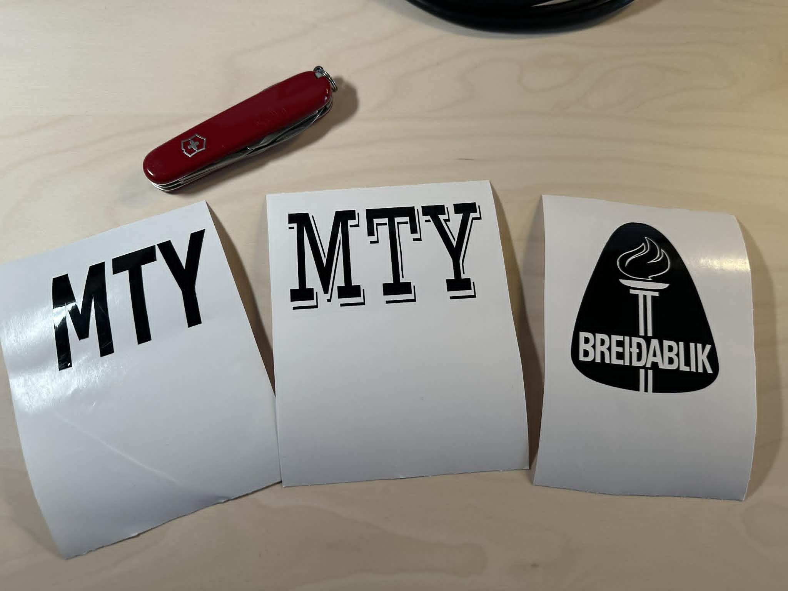 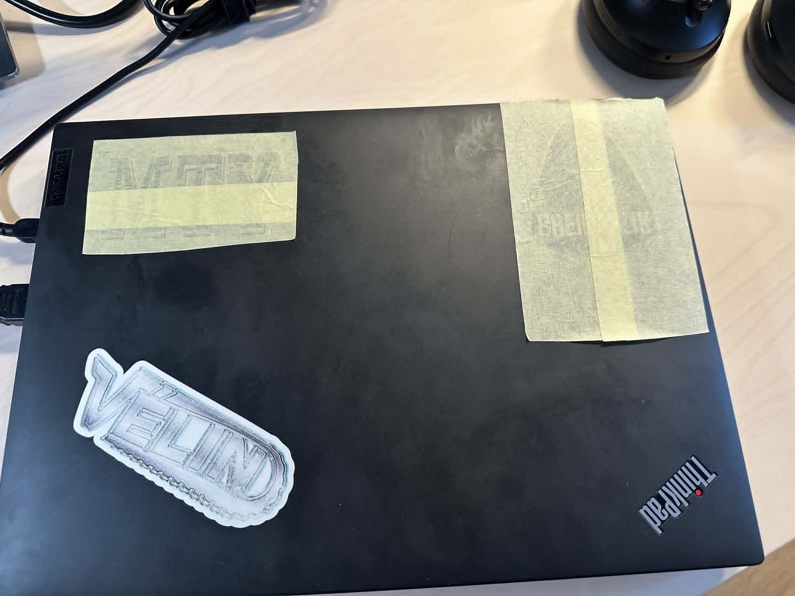
Pressfit modelling and laser cutting
Planning and preperation
To decide what kind of press-fit model I wanted to design, I browsed Pinterest for ideas. In the end, I chose to create a keychain stand that also includes an open storage box for small everyday items such as my wallet, glasses, and similar accessories. I used the following Pinterest design as inspiration for my own model: Pinterest design
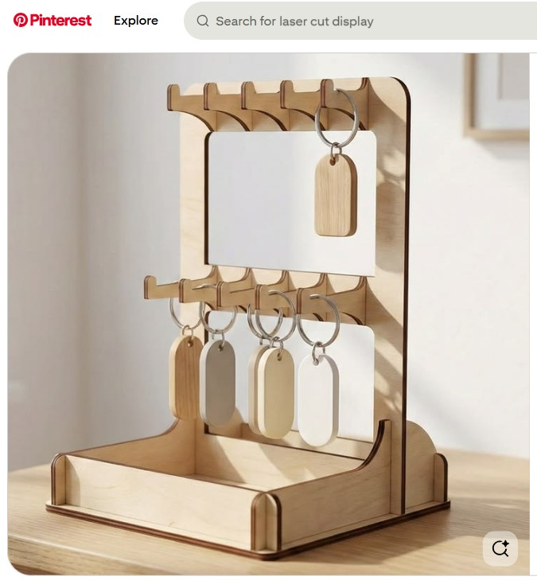
For the CAD work, I used Autodesk Fusion 360, as recommended in the assignment instructions. I already had Fusion installed on my computer from a previous course, so I could start designing right away. Before modelling, I watched a few tutorials on parametric design and on converting a 3D model into a 2D layout suitable for laser cutting.
Initially, I planned to make the press-fit model out of plywood, but the lab had a limited supply available. Therefore, I chose to use 5 mm acrylic instead.
Kerf test
To account for laser kerf, my classmates and I performed a kerf offset test. Kerf is defined as the width of material removed by the laser during cutting.
The two images below are illustrative examples of laser kerf and were found online esab.com.
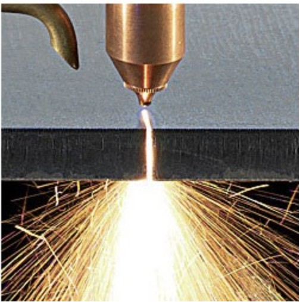 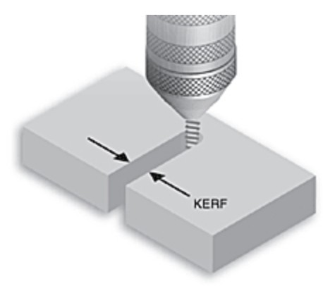
To carry out the kerf offset test, we first drew nine (equal-sized) rectangles and a rectangular frame around them in Fusion 360. We then exported the sketch as a DXF file and opened it in Inkscape, where we prepared an SVG file for laser cutting and ensured the line width was set to 0.02 mm. Images of the Fusion sketch are shown below.
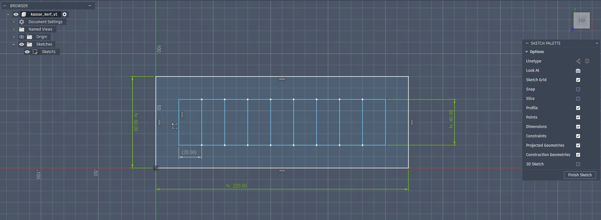
For our first kerf-test attempt, we used a small 3 mm plywood plate. Because the plywood piece was narrower than our full frame design (200 mm total width), we had to scale the frame down in Inkscape to make it fit on the material. This first attempt was not successful, as the laser did not cut completely through the small rectangles, so the test pieces could not be removed cleanly. The incomplete cut was likely due to incorrect laser settings, such as too high speed or too low power or the plywood not sitting perfectly flat on the machine. The outcome of this failed kerf test is shown below.
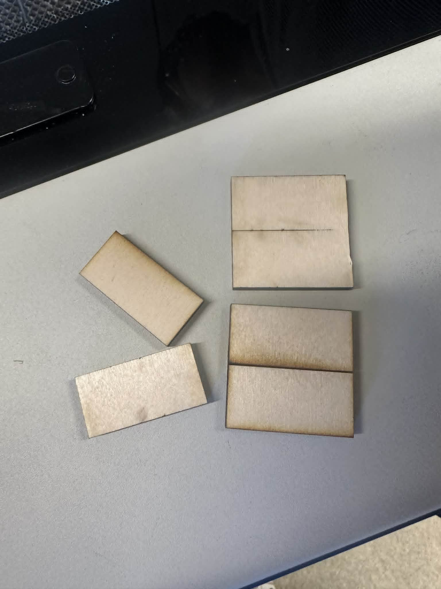
For the second attempt, we used a 3 mm transparent acrylic plastic, the same material as for my design. The cut was complete. A short video below shows the laser cutting out the rectangles.
After cutting out the rectangles, we calculated the kerf, by measuring the difference between the width of the total gap and total width of the rectangles, and divide the value by number of lines, which is ten. The kerf was roughly measured with a vernier calliper. The outcome was: Kerf = (13.46cm - 13.30cm)/10 = 0.016 cm = 0.16 mm. Images below show the outcome of the kerf testing on a 3 mm acrylic plastic material.
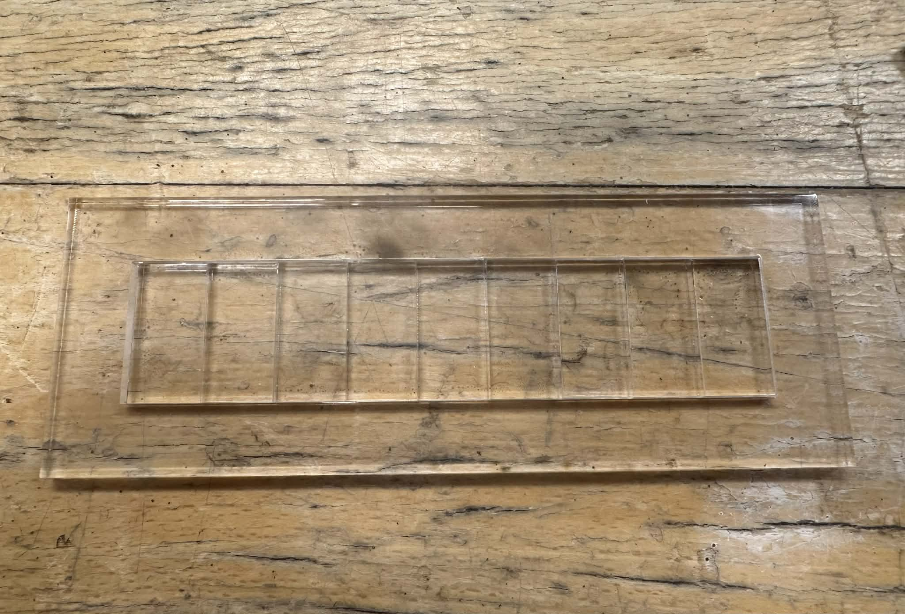 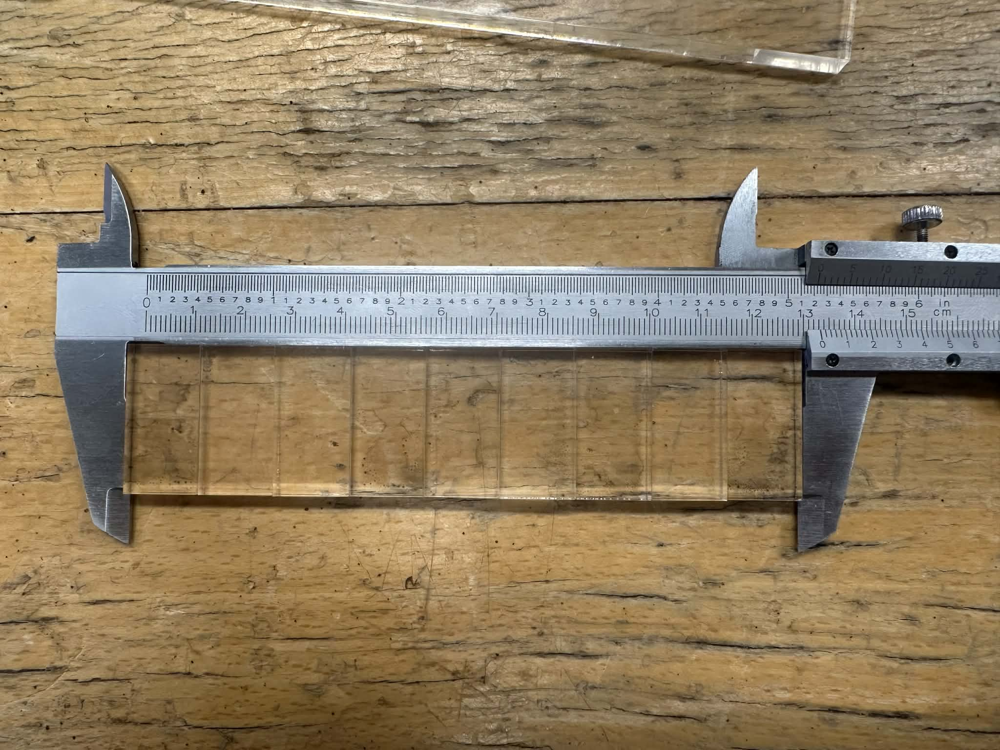 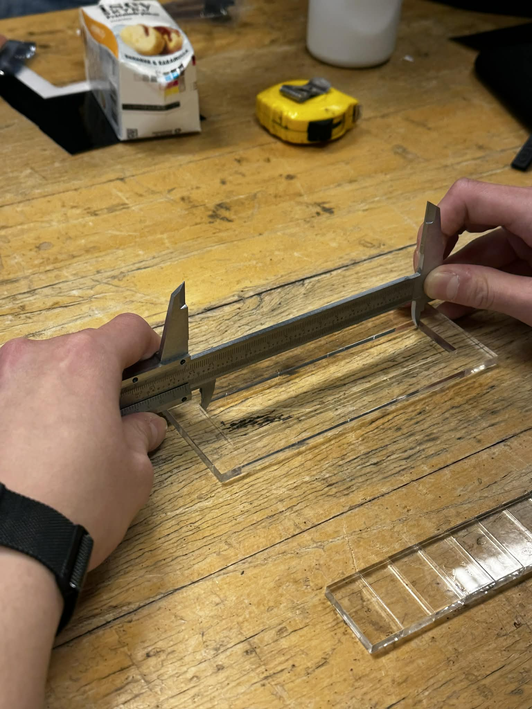
Design of the pressfit model
I wanted to design a keychain stand similar to the one I found on Pinterest, but with only one hook level instead of two. To begin the process, I sketched the parts/plates on my iPad with rough estimated dimensions and recorded the main measurements in an Excel table.
My design consists of four types of plates: 1× P1 base, 1× P2 main vertical support (with a window cutout), 2× P3 curved side frames, 2× P4 tray walls, and 5× P5 hooks. The model uses two joint types: press-fit joints and finger joints. An overview of these joint types (along with other common laser-cut joint options) can be found here: laser cutting joints and on the image below.
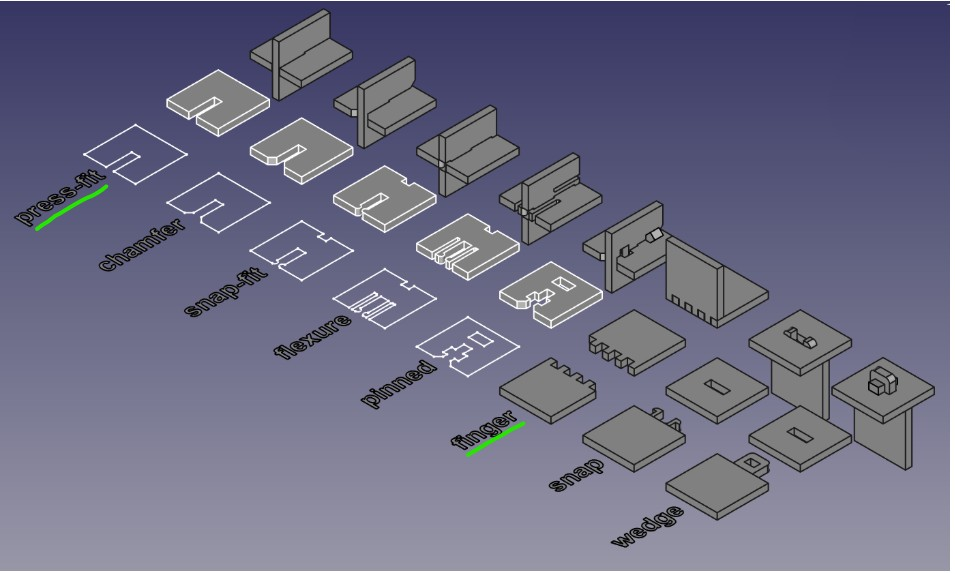
Here below are the rough sketches of the plates, along with the Excel table with main dimensions.
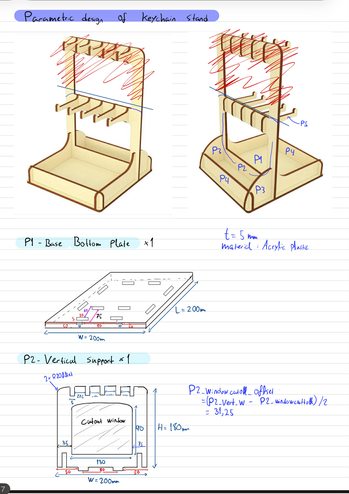 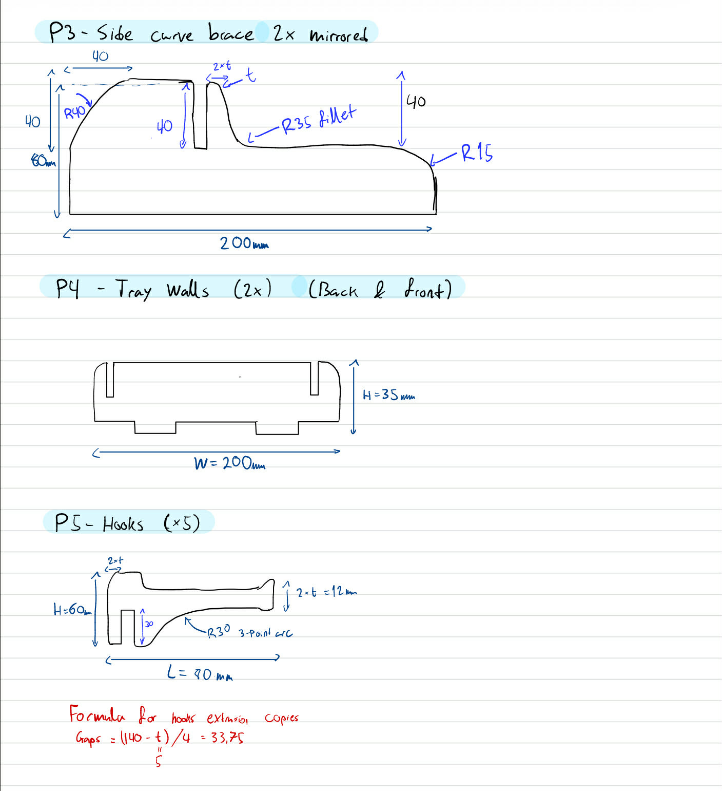 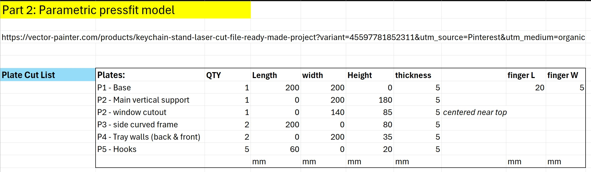
After preparing the design, I began modelling the stand in Fusion 360 with one main requirement in mind: the model needed to be parametric and scalable. I chose "P1 base width" as the primary driving parameter, meaning the overall size of the model can be scaled simply by changing that single value. The only independent parameter is the plate thickness, which also determines the joint thickness.
To help with creating joints that automatically update with the parameters, I followed this tutorial on using the Combine tool to generate automatically sized finger joints: Automatically sized finger-joints.
Below is a table showing the user parameters used in the design. Some dimensions differ slightly from my original Excel table because I refined the model during development and linked more measurements to P1 base width using proportional ratios.
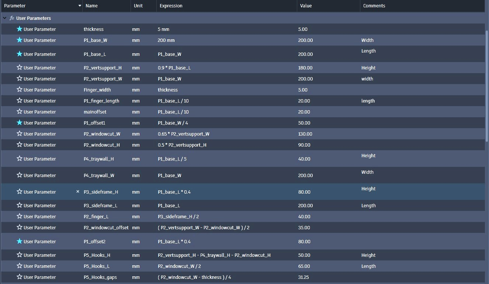
Design drawn in Fusion 360
Below is a full view of the completed 3D model of the keychain stand. You can view the underlying sketches by clicking “Open in Fusion” at the top of the viewer panel.
Laying out the bodies and applying kerf compensation
After designing the model, I watched the following video, from the channel "Fab Lab Akureyri" to lay out flat sheet components to prepare for CAM, and export the fusion file as DXF file with kerf compensation and open it in Inkscape.
To layout the bodies, I used align tool in modify, and selected the bottom plate as the body to align from and the rest of the plates as aligned to. Next I switched from Design to Manufacture on the top left side of the toolbar. Then I created a new setup, and made sure that the z-axis was facing upwards, on a chosen face. The setup can be seen down below in a full view.
Following that I chose the kerf compensation, where I created a new 2D cutting profile under fabrication, and selected all the 11 plates as face contours. I also made sure the 2D cutting operation used the correct compensation settings. In addition, I created a new laser cutter tool. The settings below show the configuration I used with a kerf value of 0.16 mm, based on our kerf test.
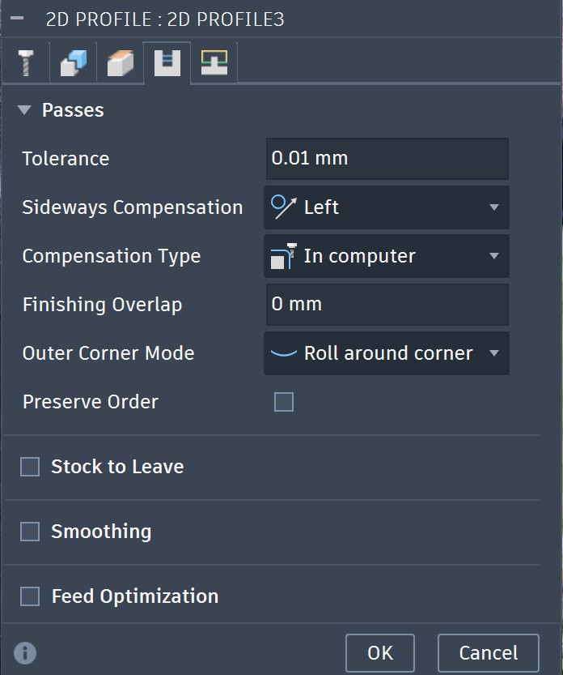
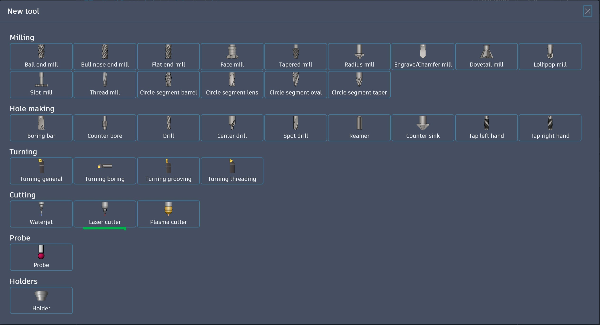
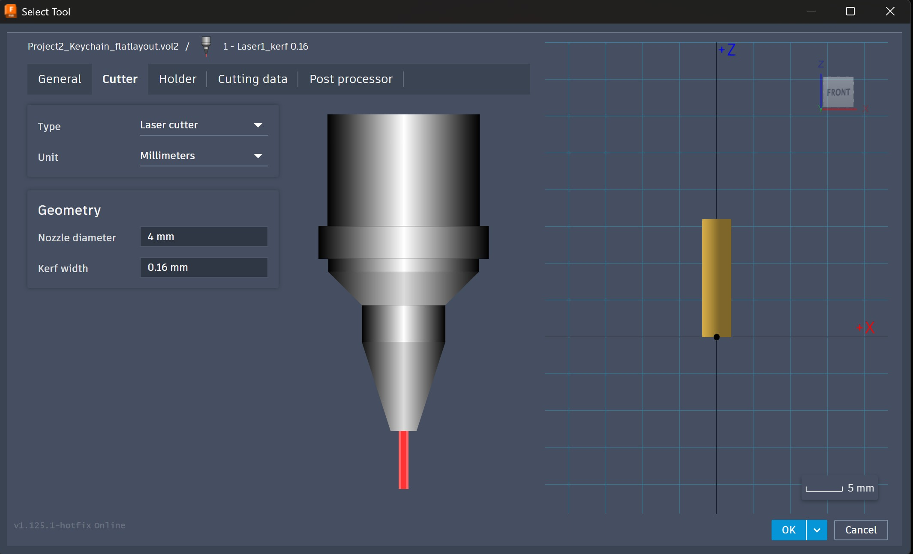
The first image down below shows a simulation of the laser cutter cutting out the parts, using our kerf compensation. The final step is going the post process tab, and choosing AutoCAD DXF as a post processor file and storing the output file to my project2 folder on my onedrive. The post-processing settings I used are shown in the second image.
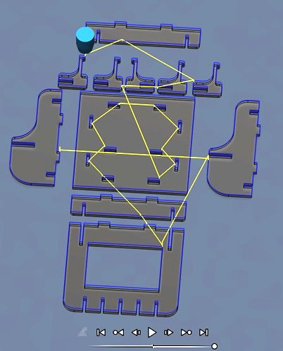
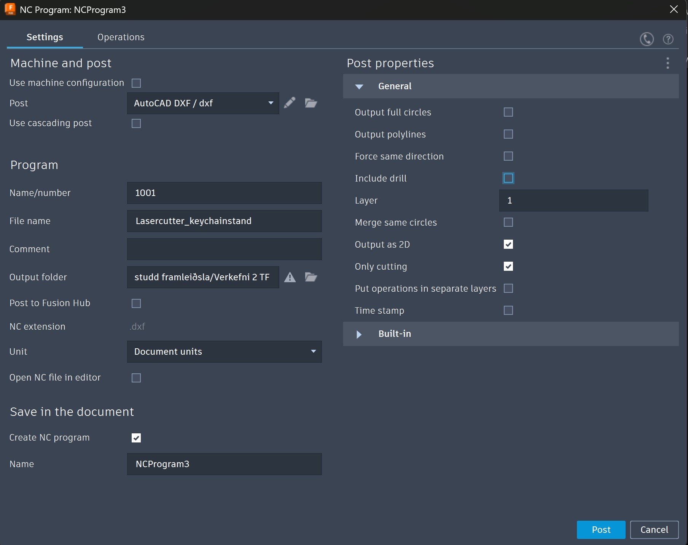
Editing the dxf file in Inkscape
I then uploaded the dxf file in Inkscape, and followed the instructions in the Fab Lab Akureyri video.
In the document properties of the SVG file, I set the page size to 500 × 500 mmand arranged the parts on the sheet so they were ready for laser cutting. I set the outline stroke width to 0.02 mm, and then saved the file as an SVG. The final layout of the parts is shown below:
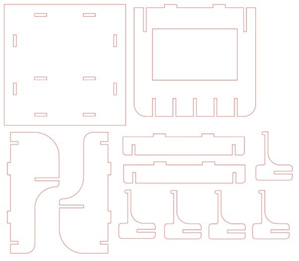
Testing the joints
Before cutting out my whole model, I did a test on the joints. I created a reduced-scale version of three parts from the model and arranged them as small test plates. I used a kerf value of 0.16 mm, which I determined from the kerf test. I then followed the same workflow as before to prepare the SVG file for cutting. Then I moved the file to the computer, attcahed to the Epilog Laser cut machine. The resulting test plate looked like this
The test results were decent. The joints clicked together well, but the fit was quite tight, and it was difficult to separate the plates again. As I was cutting a 5 mm acrylic sheet, I used the following laser settings: 8% speed and 100% power (with frequency set to 100%). The image and video below show the cutting process and the final result of the test.
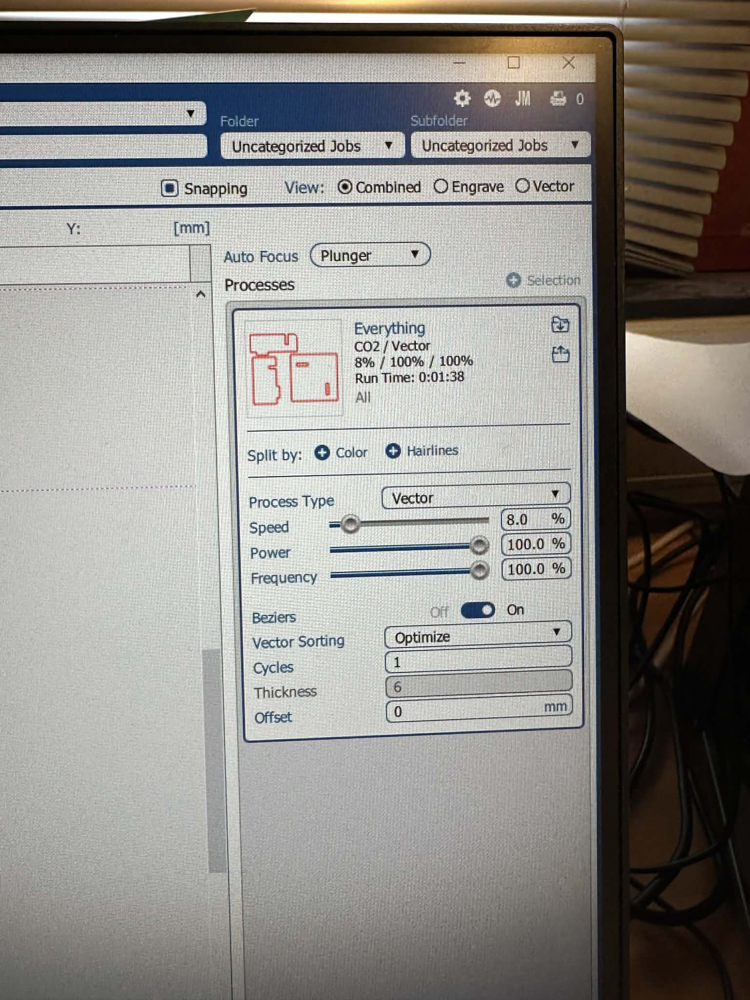
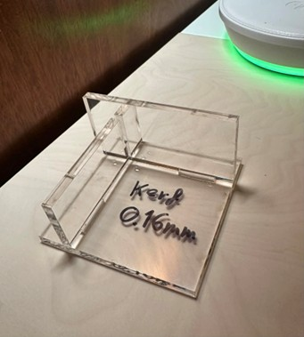
Because the initial joint test was not ideal, I slightly adjusted the kerf value and ran additional tests using 0.15 mm and 0.155 mm. Using a smaller kerf value produces a looser press-fit, the joints will have more clearance, which increases the gap between the tabs and slots. The images below show the laser tool setup with the different kerf values, as well as the result from joint test, with three different Kerf widths.
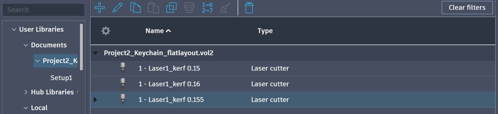
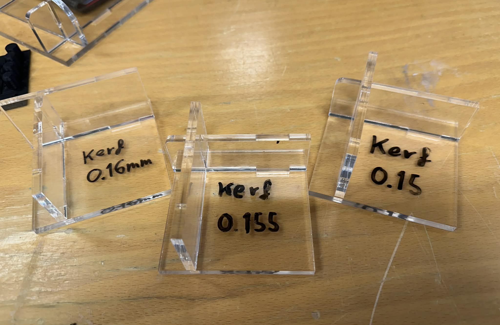
After cutting the test plates with kerf values of 0.15 mm and 0.155 mm, I found that 0.15 mm produced tabs that were too loose, while 0.155 mm provided a perfect press-fit.
Laser cutting the pressfit-model and final result
Since 0.155 mm gave the best fit in the joint tests, I applied that kerf compensation to the full press-fit model and created a new layout file in Inkscape using the same workflow described in Section 3.6. Before cutting the final model, I learned that several other students had experienced incomplete cuts when sending the entire layout to the laser in a single print. To reduce the risk of this happening, the lab assistant teacher, Magnús, recommended lowering the cutting speed to 5%. In addition, I cut the parts as a 5 separate prints instead of cutting the full layout at once. The images below show the individual print jobs on the machine and the finished parts cut from a 500 × 500 mm sheet of 5 mm acrylic.
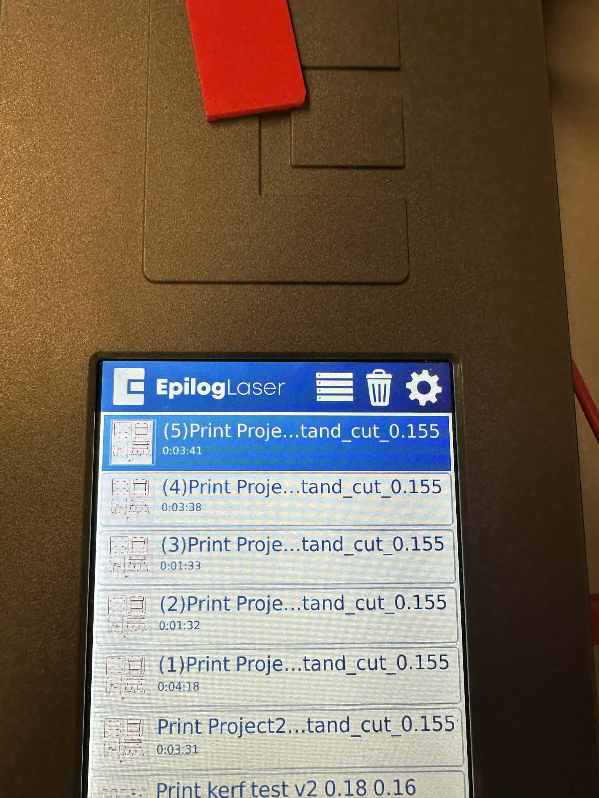
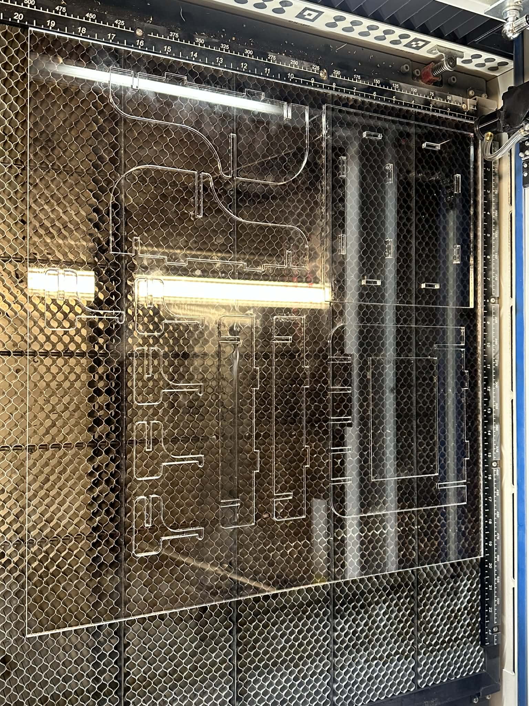
With these settings, the laser cut was successful, and all parts released easily from the acrylic sheet. I then began
assembling the keychain stand. The joints fit together smoothly, although they were slightly looser than on the test plate.
This was most likely due to the adjusted cutting settings and/or small variations in the laser cutter’s performance.
Even though the press-fit was a bit looser than I originally intended, the stand is still sturdy and works well for its
purpose. I decided not to run another cut, since that would waste valuable material. In addition, the supply of 5 mm acrylic
sheets was almost finished, and only 3 mm sheets were available, which did not match my design goals. The final result is
shown below.
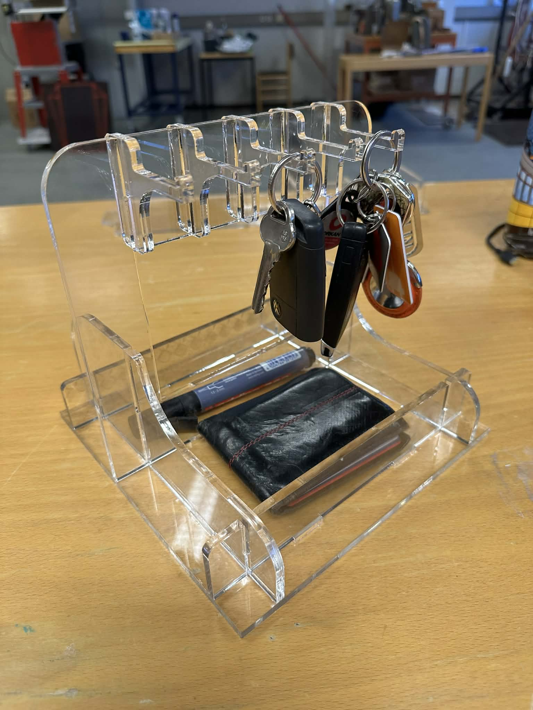
Design files
The design files for the keychain stand are uploaded to my Thangs databank.